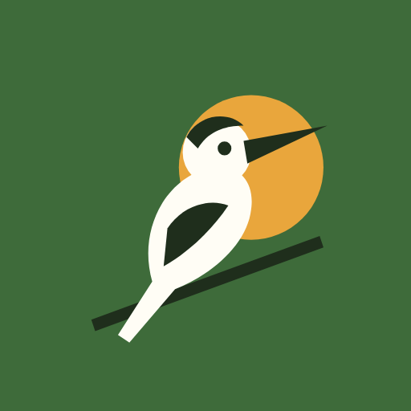

Dumelang! Welcome
African Wildlife Survey
Free offline field guide and survey app for the birds, mammals, reptiles and insects of Botswana and the Okavango, southern Africa.
Get the app (Android)
⬇ Download the app (33 MB)For Android 8 and later. After downloading, open the file and allow installing from your browser or Files app. The install guide below shows each step. Not available for iPhone.
Also on Google Play: search for African Wildlife Survey. If you installed from Google Play, update from there.
Install and use guides
Install and packs guide (English) Kaedi ya go tsenya le dipakana (Setswana) How to use the app (English) Kafa o ka dirisang lenaane (Setswana)PDF versions: install (English), install (Setswana), how to (English), how to (Setswana).
Photo and sound packs
The easiest way to add packs is inside the app: Records, Photo and sound packs, then Download. The files below are for sharing phone to phone where there is no internet. Do not unzip them.
| More bird photos | 32 MB |
| Bird calls | 25 MB |
| More mammal photos | 10 MB |
| More insect photos | 10 MB |
| More reptile photos | 3 MB |
About
- Free, no ads, no account. Your records stay on your phone. Privacy policy
- Questions: apps@warrimoo.net
- Photos by iNaturalist contributors and bird calls from xeno-canto.org, each under the licence credited in the app.